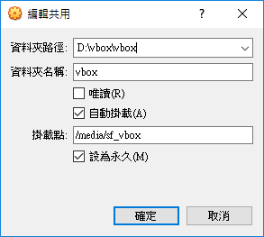

VirtualBox 6.x Shared Folder
前一版的 Ubuntu 16.04 LTS，它當 VirtualBox Guest OS 的時候， 可以安裝一個現成 virtualbox-dkms 套件，裝好之後， shared folder 就自動生效了，非常方便。
Ubuntu 18.04 LTS 問世之後，它的 virtualbox-dkms 套件 是針對 VirtualBox 5.2.18 及之後版本，當時 VirtualBox 也 是 5.2x 左右，一切也沒問題。
突然間，2018年12月 VirtualBox 6.0 降臨了，我直接將 VirtualBox 5.x 升級到 VirtualBox 6.0 ，跑一樣的 guest image， Shared Folder 就失效了。
查了很久，才發現是 virtualbox-dkms 套件只支援 VirtualBox 5.x 的關係，等了一陣子，看起來 Ubuntu 18.04 是沒打算升級 dkms 套件了， 那只好回到老方法，讓 VirtualBox Host 這邊插入虛擬的 Guest Additions 光碟片。
在 VirtualBox Host 這邊的 Menu Bar ，有一個 “裝置” 選項，裡面 有一個 “插入 Guest Additions CD 映像”。
虛擬機此時已經完成模擬一台光碟機，並插好光碟片了， 這時在 Guest Ubuntu 18.04 裡面，先 mount 該光碟片， 看看有哪些檔案 -
root@ub18:/mnt# mount /dev/cdrom /mnt
mount: /mnt: WARNING: device write-protected, mounted read-only.
root@ub18:/mnt# cd /mnt
root@ub18:/mnt# ls -al
total 71758
dr-xr-xr-x 5 root root 2408 Apr 16 18:03 .
drwxr-xr-x 23 root root 4096 Apr 13 13:42 ..
-r--r--r-- 1 root root 763 Jan 22 01:01 AUTORUN.INF
-r-xr-xr-x 1 root root 6384 Apr 16 17:56 autorun.sh
dr-xr-xr-x 2 root root 792 Apr 16 18:03 cert
dr-xr-xr-x 2 root root 1824 Apr 16 18:03 NT3x
dr-xr-xr-x 2 root root 2652 Apr 16 18:03 OS2
-r-xr-xr-x 1 root root 4821 Apr 16 17:56 runasroot.sh
-r--r--r-- 1 root root 547 Apr 16 18:03 TRANS.TBL
-r--r--r-- 1 root root 3710817 Apr 16 17:56 VBoxDarwinAdditions.pkg
-r--r--r-- 1 root root 3949 Apr 16 17:56 VBoxDarwinAdditionsUninstall.tool
-r-xr-xr-x 1 root root 9665969 Apr 16 17:57 VBoxLinuxAdditions.run
-r--r--r-- 1 root root 20608000 Apr 16 17:58 VBoxSolarisAdditions.pkg
-r-xr-xr-x 1 root root 26216000 Apr 16 18:02 VBoxWindowsAdditions-amd64.exe
-r-xr-xr-x 1 root root 270104 Apr 16 17:57 VBoxWindowsAdditions.exe
-r-xr-xr-x 1 root root 12977032 Apr 16 18:00 VBoxWindowsAdditions-x86.exe這些檔案，就是針對一些常見的作業系統 的 VirtualBox Guest Additions 。
看起來，既然Guest OS 是 Ubuntu，那就是執行 VBoxLinuxAdditions.run 了。
root@ub18:/mnt# ./VBoxLinuxAdditions.run
Verifying archive integrity... All good.
Uncompressing VirtualBox 6.0.6 Guest Additions for Linux........
VirtualBox Guest Additions installer
Copying additional installer modules ...
Installing additional modules ...
VirtualBox Guest Additions: Starting.
VirtualBox Guest Additions: Building the VirtualBox Guest Additions kernel
modules. This may take a while.
VirtualBox Guest Additions: To build modules for other installed kernels, run
VirtualBox Guest Additions: /sbin/rcvboxadd quicksetup <version>
VirtualBox Guest Additions: or
VirtualBox Guest Additions: /sbin/rcvboxadd quicksetup all
VirtualBox Guest Additions: Building the modules for kernel 4.15.0-47-generic.
update-initramfs: Generating /boot/initrd.img-4.15.0-47-generic
VirtualBox Guest Additions: Running kernel modules will not be replaced until
the system is restarted
root@ub18:/mnt#執行完，最新的Guest Additions 已經編出 kernel module，增加了屬於 VirtualBox 的 unix user 與 group 了。 它也提示要重開機，才能生效。趁這時候，趕快把 Virtual Box Host 這邊的 shaered folder 設定先完成，再來重開機。

VirtualBox 6 的 Shared Folder 可以設定 Guest OS 裡面要自動 Mount 到哪裡了， 這是蠻方便的改進。Host端設定好之後，Guest OS 就能重開機了。
web@ub18:/media$ ls -al
total 8
drwxr-xr-x 3 root root 4096 Apr 21 21:42 .
drwxr-xr-x 23 root root 4096 Apr 13 13:42 ..
drwxrwx--- 1 root vboxsf 0 Apr 21 22:04 sf_vbox
web@ub18:/media$重開機之後，看一下 /media/sf_vbox 已經自動產生，屬於 vboxsf 群組的使用者都能讀寫， 假設Unix使用者web 要加入 vboxsf 群組，須執行下列命令 -
sudo adduser web vboxsf以上，Shared Folder 就可以開始用了，而且使用者web就能直接用了，不需要root才 能用。